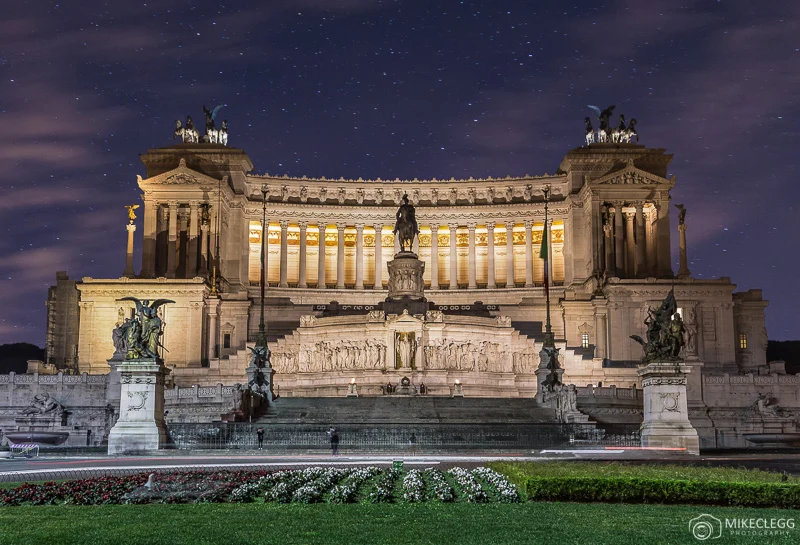

Neapole este cel mai mare oraș din Italia de Sud și al treilea oraș din Italia.
Este una dintre capitalele regionale și are o populație de aproape un milion de locuitori, iar împreună
cu zona metropolitană strânge între 3 și 4,4 milioane de locuitori. Este reședința regiunii Campania
și a provinciei Napoli și un centru economic și cultural important din sudul Italiei. Se află la
mijlocul distanței dintre Vezuviu și zona vulcanică Campi Flegrei.
Napoli se situează pe malul nordic al golfului cu același nume, în extremitatea
sud-estică a Câmpiei Campaniene. Cartiere sud-estice ale orașului urca pe versanții Vezuviului.
În partea nord-vestică este delimitată de zona vulcanică Campi Flegrei.Teritoriul înscris pe lista patrimoniului mondial cuprinde de asemenea zona dealului Capodimonte,
situată la nord de centrul istoric, respectiv zona costieră Chiaia-Posillipo situată la nord-vest,
până la mica insulă Nisida. Centrul istoric cuprinde mai mult de 150 de biserici, aproximativ 300 de
clădiri cu caracter religios, palate, 30 de muzee, situri arheologice, monumente, obeliscuri și fântâni
arteziene.

Deși este un oraș bogat în monumente istorice și tradiții, anual primește un număr mai
redus de vizitatori față de alte orașe italiene. Centrul istoric al orașului începând din anul 1995
face parte din patrimoniul mondial și este una dintre cele mai mari centre urbane de pe aceată listă.
Centrul istoric are o dispunere dreptunghiulară și a păstrat rețeaua de străzi stabilită de coloniști
din Cumae, fondatorii orașului antic Neapolis.